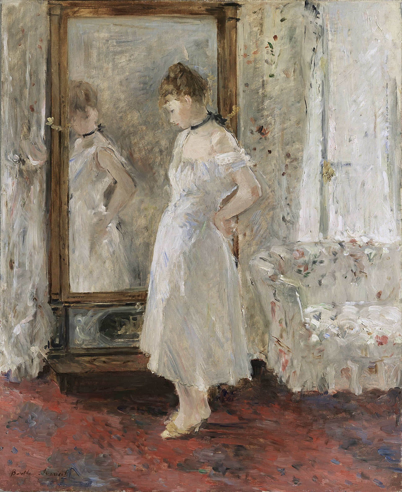
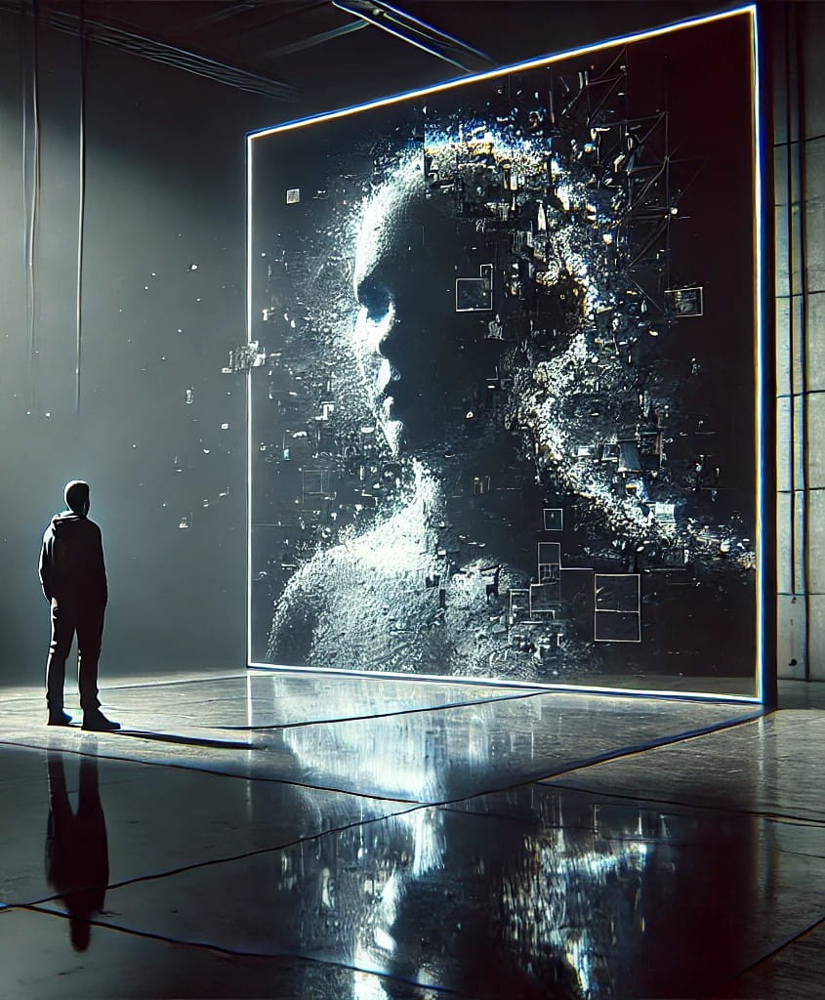

The Psyche Mirror: Revolutionizing Self-Reflection in the Digital Age
Introduction
In a world where technology continues to reshape our daily lives, imagine a virtual reality tool that doesn't just reflect your physical appearance, but provides a stunning 3D visualization of your mind, emotions, and thought patterns, analyzed with the depth and insight of Fyodor Dostoevsky. This is the Psyche Mirror – a groundbreaking tool that could revolutionize how we understand ourselves, making profound self-reflection as routine and intuitive as checking your hair before leaving the house.
The Psyche Mirror represents a potential paradigm shift in our approach to self-understanding. By combining cutting-edge neurotechnology with the psychological depth reminiscent of Dostoevsky's literary insights, this innovative concept promises to make the abstract world of our minds tangible and interactive.
The Psyche Mirror introduces the concept of "mental hygiene" as an essential daily practice for maintaining and improving psychological well-being, much like physical hygiene. This routine involves regular self-reflection and mental adjustment to manage stress and refine emotional responses. By using the mirror to align mental states with daily goals, and address underlying psychological issues, users can cultivate a deeper, more consistent sense of mental clarity and resilience.
Berthe Morisot's 1876 painting La Psyché
Background
The concept of The Psyche Mirror has a rich cultural and historical context. The term "psyche" originates from Greek mythology, where it personified the human soul or spirit. By the 18th century, the term "psyche mirror" (or "miroir psyché" in French) referred to a specific type of full-length, tilting mirror, reflecting a material application. It was in the 19th century that "psyche" was incorporated into psychological discourse to denote the human mind or soul, coinciding with the emergence of psychology as a distinct field. This evolution of meaning is elegantly represented in Berthe Morisot's 1876 painting La Psyché, which depicts a woman gazing into a mirror, prompting viewers to reflect on themes of introspection and identity.
In contemporary context, The Psyche Mirror represents a convergence of advanced technology and psychological insight, aimed at revolutionizing self-reflection. Rooted in the long-standing human quest for self-understanding, this concept builds upon centuries of philosophical and psychological exploration of the mind. Self-reflection, a cornerstone of personal growth and mental well-being, has been valued across cultures and throughout history for its ability to foster self-awareness, emotional regulation, and improved decision-making.
In psychology, introspection—the examination of one's own mental and emotional processes—has been a fundamental tool since the field's inception. The modern Psyche Mirror concept takes this practice to new heights by leveraging cutting-edge neurotechnology and artificial intelligence to provide unprecedented insights into the human psyche. By making abstract mental processes visible and interactive, it offers a novel approach to self-understanding, potentially transforming how individuals engage with their inner worlds.
Core Technology and Key Features of the Psyche Mirror
The Psyche Mirror's functionality relies on a synergy of advanced technologies, offering a comprehensive view of one's mental landscape:
1. Brain Mapping and Neural Imaging
Leveraging cutting-edge neuroimaging techniques and anticipated advancements in brain-computer interfaces, the Psyche Mirror pushes the boundaries of mental visualization. This next-generation technology decodes and renders the content of thoughts, emotions, and memories with high fidelity.
The centerpiece is a detailed, rotating 3D model of the brain, alive with pulses of light, color changes, and subtle movements representing ongoing mental processes. Delicate strands of light crisscross the model, showing neural pathways that light up in cascades as thoughts form and memories are accessed, allowing users to literally see their train of thought.
2. Artificial Intelligence and Data Interpretation
The convergence of neurotechnology and artificial intelligence enables the Psyche Mirror to translate complex neural signals into clear, comprehensible visual representations. Sophisticated AI algorithms and machine learning models, trained on extensive psychological and neuroscientific datasets, interpret vast amounts of neural data, identifying patterns and drawing connections that might escape human observation.
This technology allows for detailed emotional centers mapping, with key areas like the amygdala, hippocampus, and prefrontal cortex distinctly identifiable and pulsating with colors representing various emotional states.
3. Virtual Reality Interface and Thought Visualization
An advanced virtual reality interface creates an immersive, interactive 3D environment. Users can navigate and interact with their mental representation, exploring a cosmic-like field of memories and thoughts. Smaller bubbles appear and disappear around the central brain model, representing current thoughts and preoccupations. As users focus on different thoughts, relevant memories light up like stars, showing how their current state connects to past experiences.
4. Dostoevskian Analysis
The mirror's most revolutionary feature is its ability to analyze the mental landscape with the depth and insight reminiscent of Fyodor Dostoevsky's literary works. Powered by natural language processing models trained on Dostoevsky's works and a wide range of psychological theories and case studies, this feature provides nuanced, contextually rich interpretations of mental states. It exposes underlying motivations, conflicts, and hidden patterns in the user's psyche, offering insights that go beyond surface-level observations.
Universe 00110000
This integrated approach allows users to experience not just their brain's structure and activity, but also their actual thoughts, emotions, and memories as vivid, interactive elements within the virtual environment, providing an unprecedented tool for self-reflection and understanding.
The Dual Model of Mental States
The Psyche Mirror's functionality is fundamentally shaped by the observer effect - the principle that the act of observation changes the phenomenon being observed. This effect creates a clear distinction between two mental states:
Unobserved State
The unobserved state provides a baseline of the user's typical thought patterns, emotions, and behaviors. It represents the mind at rest, unaffected by the observer effect, offering a "true" snapshot of the user's mental landscape when not actively engaged in self-reflection. These snapshots serve as reference points for comparison and analysis.
Observed State
The observed state reflects the mental landscape during active engagement with the Psyche Mirror. It is inherently altered by the observer effect - the very act of looking into the mirror changes the user's mental state. This state is characterized by:
- Activation of Self-Reflective Processes: Areas of the brain associated with self-awareness and introspection activate, altering the mental landscape being observed.
- Altered Emotional States: The knowledge that one is observing oneself can lead to changes in emotional responses and thought patterns.
- Cognitive Load: The effort of analyzing one's own mental state adds a cognitive burden that wouldn't be present in the unobserved state.
Observer Effect and Its Implications
Understanding the interplay between these two states is crucial for accurately interpreting the data provided by the Psyche Mirror and for developing strategies to promote genuine self-reflection and growth.
User Experience
As you put on your VR headset, you are seamlessly transported into your secure, personal virtual environment. The Psyche Mirror immediately recognizes you and initiates the scanning process, transforming your surroundings into a vivid 3D visualization of your mental landscape. Immersed in this dynamic space, you navigate through various aspects of your mind, exploring thoughts, emotions, and memories. You can zoom in on specific areas for deeper analysis, engaging with guided exercises designed to alter your mental state in real time, while the visualization adapts to reflect these changes.
Throughout the session, the mirror's AI provides insightful interpretations, highlighting patterns and potential areas for personal growth. As you interact with these insights, you gain a clearer understanding of your mental processes. The session concludes with a period of reflection, where you review key takeaways and set goals for future self-reflection. This process not only enhances your self-awareness but also prepares you for continued growth and well-being in subsequent sessions.
Interface Design and Interaction
- Dual Display: A split-screen view showing an unobserved state snapshot alongside the current observed state. Clear visual cues indicate which display is affected by the observer effect.
- Comparative Analysis: AI-driven highlighting of differences between unobserved and observed states, explicitly noting changes likely caused by the observer effect.
- Correction Tools: Tools for self-reflection and mental adjustment are provided, with reminders that using these tools further alters the observed state.
- Temporal View: Observe how your mental state has changed over time, identifying patterns and trends in your psychological wellbeing.
- AI Highlights: Areas identified as noteworthy gently pulse or glow, drawing your attention to potential areas of stress, recurring thought patterns, or opportunities for growth.
Portrait of Fyodor Dostoevsky by Vasily Perov (1872)
Dostoevskian Analysis: Unveiling Hidden Depths
The mirror's most revolutionary feature is its ability to analyze your mental landscape with the depth and insight of a literary master. It delves into the underlying motivations driving your actions, even those hidden from your conscious awareness. By identifying the subtle fears, insecurities, and desires that shape your choices, the mirror helps you understand the "why" behind the "what."
Much like the characters in Fyodor Dostoevsky's literary works, we often harbor conflicting desires and motivations. The mirror untangles these internal conflicts, revealing the complex interplay between conscious aspirations and subconscious drives. It also pinpoints the lingering effects of past traumas, even those buried deep within the subconscious, helping you recognize how these experiences continue to influence your thoughts, emotions, and behaviors.
Additionally, the mirror prompts users to confront fundamental existential questions about their purpose, values, and place in the world. This exploration leads to a deeper understanding of oneself and one's existence, providing a unique opportunity for profound self-reflection and personal growth.
Furthermore, by making mental states visible, the mirror allows for early detection of potential issues, preventing them from escalating. The deep insights provided by the Psyche Mirror can accelerate personal growth and self-improvement, giving users a clearer understanding of their thought patterns and behavioral tendencies. This empowerment enables them to make more conscious choices and foster positive change.
As individuals gain a better understanding of their own minds, they may develop greater empathy for other. Ultimately, the mirror could foster a society more attuned to emotional well-being, enhancing both personal and collective well being.
Privacy and Security
Data Protection and User Control
- Encrypted Personal Space: Each user's Psyche Mirror experience takes place in a fully encrypted virtual environment, ensuring complete privacy.
- User Control: Users have complete control over their data, including the ability to delete or modify it at will.
Conclusion
The Psyche Mirror represents a bold step forward in our quest for self-understanding and mental well-being. By making the abstract world of our minds tangible and interactive within a private, secure virtual environment, it has the potential to transform how we approach personal growth.
As we stand on the brink of this potential revolution in self-reflection, the future of personal growth and mental wellbeing may be just a VR session away, in a mirror that shows not just our faces, but the very essence of who we are, where we come from, and who we might become.
The Psyche Mirror invites us to embark on the most profound journey of all – the journey into our own minds. As we move forward, let us approach this concept with both excitement for its potential and thoughtful consideration of its implications, always striving to use technology in ways that truly enhance the human experience.